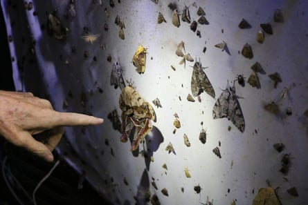
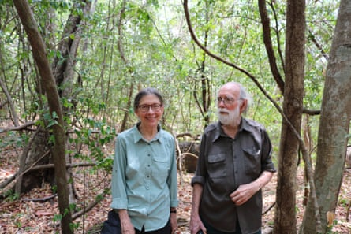
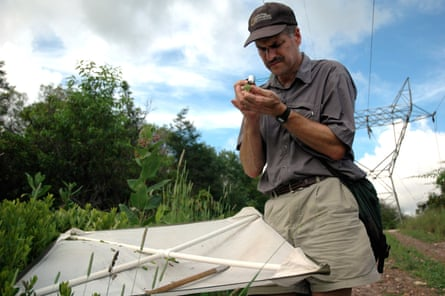
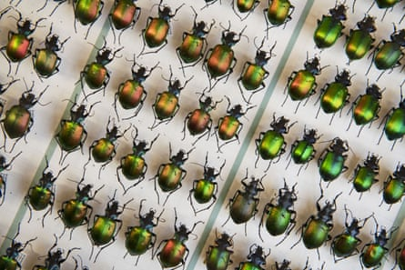
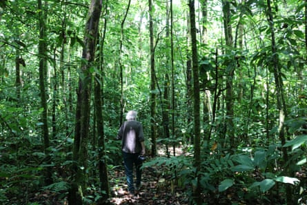
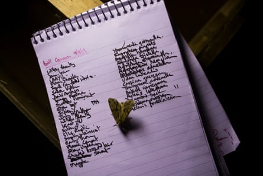
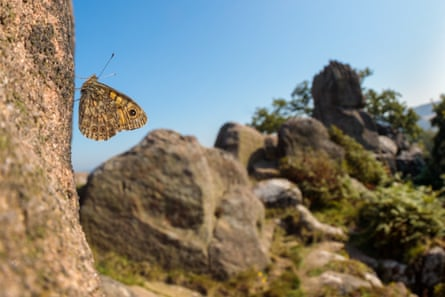

D aniel Janzen only began watching the insects – truly watching them – when his ribcage was shattered. Nearly half a century ago, the young ecologist had been out documenting fruit crops in a dense stretch of Costa Rican forest when he fell in a ravine, landing on his back. The long lens of his camera punched up through three ribs, snapping the bones into his thorax.
Slowly, he dragged himself out, crawling nearly two miles back to the research hut. There were no immediate neighbours, no good roads, no simple solutions for getting to a hospital.
Selecting a rocking chair on the porch, Janzen used a bedsheet to strap his torso tightly to the frame. For a month, he sat, barely moving, waiting for his bones to knit back together. And he watched.
In front of him was a world seething with life. Every branch of every tree seemed to host its own small metropolis of creatures hunting, flying, crawling, eating. The research facility lay in a patchwork of protected rainforest, dry forest, cloud forest, mangroves and coastline covering an area the size of New York, and astonishingly rich in biodiverse life. Here, the bugs gorged, coating the leaf litter with a thick carpet of droppings.
Light traps have long been used to monitor nocturnal insect numbers. In a photograph of one taken in 1978, about 3,000 species were identified.Photograph: Patrick Greenfield/The Guardian
But the real show was at night: for two hours each evening, the site got power and a 25-watt bulb flickered on above the porch. Out of the forest darkness, a tornado of insects would flock to its glow, spinning and dancing before the light. Lit up, the side of the house would be “absolutely plastered with moths – tens of thousands of them”, Janzen says.
Inspired, he decided to erect a sheet for a light trap with a camera – a common way to document flying insect numbers and diversity. In that first photograph, taken in 1978, the lit-up sheet is so thickly studded with moths that in places the fabric is barely visible, transformed into what looks like densely patterned, crawling wallpaper.
Scientists identified an astonishing 3,000 species from that light trap, and the trajectory of Janzen’s career was transformed, from the study of seeds to a lifetime specialising in the forest’s barely documented populations of caterpillars and moths.
Now 86, Janzen still works in the same research hut in the Guanacaste conservation area , alongside his longtime collaborator, spouse and fellow ecologist, Winnie Hallwachs. But in the forest that surrounds them, something has changed. Trees that once crawled with insects lie uncannily still.
The hum of wild bees has faded, and leaves that should be chewed to the stem hang whole and un-nibbled. It is these glossy, untouched leaves that most spook Janzen and Hallwachs. They are more like a pristine greenhouse than a living ecosystem: a wilderness that has been fumigated and left sterile. Not a forest, but a museum.
Over the decades, Janzen has repeated his light traps, hanging the sheet, watching for what comes. Today, some moths flutter to the glow, but their numbers are far fewer.
“It’s the same sheet, with the same lights, in the same place, looking over the same vegetation. Same time of year, same time of the moon cycle, everything about it is identical,” he says. “There’s just no moths on that sheet.”
Crumbling populations
The declines witnessed by Janzen – and described by others around the world – are part of what some ecologists call a “new era” of ecological collapse, where rapid extinctions occur in regions that have little direct contact with people.
Reports of falling insect numbers around the world are not new. International reviews have estimated annual losses globally of between 1% and 2.5% of total biomass every year.
Janzen and Hallwachs say that while the lack of insects in areas with heavy pesticide use is well documented, the collapse in protected areas is relatively new.Photograph: P Greenfield/Guardian
Widespread use of pesticides and fertilisers, light and chemical pollution, loss of habitat and the growth of industrial agriculture have all carved into their numbers. Often, these were deaths of proximity: insects are sensitive creatures, and any nearby source of pollution can send their populations crumbling.
But what Janzen and Hallwachs are witnessing is a part of a newer phenomenon: the catastrophic collapse of insect populations in supposedly protected regions of forest. “In the parts of Costa Rica that are heavily hit by pesticides, the insects are completely wiped out,” Hallwachs says.
“But what we see here in the preserved areas – that as far as we can tell, are free of even these destructive insecticides and pesticides – even here, the insect numbers are going down horrifyingly dramatically,” she says.
Long-term data for insect populations – particularly less charismatic species – is still patchy, but Janzen and Hallwachs join a number of scientists that have recorded huge die-offs of insects in nature reserves around the world.
They include in Germany , where flying insects across 63 insect reserves dropped 75% in less than 30 years; the US , where beetle numbers dropped 83% in 45 years; and Puerto Rico , where insect biomass dropped up to 60-fold since the 1970s. These declines are occurring in ecosystems that are otherwise protected from direct human influence.
David Wagner says ‘there just wasn’t any insect life’ in Texas.Photograph: George Ruhe/NYT/eyevine
When David Wagner stepped out into the US’s southern wilderness this spring, he found landscapes emptied of life. The entomologist has devoted much of his career to documenting the vast diversity of US insect life, particularly rare caterpillars. He traverses the country to find specimens, often on long road trips searching for caterpillars by day and moths by night.
Now, he finds himself coming home empty-handed. “I just got back from Texas , and it was the most unsuccessful trip I’ve ever taken,” he says. “There just wasn’t any insect life to speak of.”
It was not only the insects missing, he says, it was everything. “Everything was crispy, fried; the lizard numbers were down to the lowest numbers I can ever remember. And then the things that eat lizards were not present – I didn’t see a single snake the entire time.”
Wagner recalls when a series of international reviews began hitting headlines in 2019, saying global insect biomass was declining at a rate of 1% a year (although some estimates put it as high as 2.5% ).
“We [entomologists] were thinking conservatively,” he says, looking at the data that has emerged in the five years since then.
“I now think that that’s too low. Now I would say that 2% is happening in some areas, and we’re seeing some places threatened by climate change or urbanisation or agriculture get as high as 5% decline per year.”
TheCalosoma sycophantabeetle, or forest caterpillar hunter, is in decline in Germany, where numbers of flying insects in 63 reserves fell by 75% in under 30 years.Photograph: T Lohnes/Getty
A few percentage points a year may not have the ring of disaster. “But if you run that forward just four decades,” Wagner says, “we’re talking about nearly half the tree of life disappearing in one human lifetime. That is absolutely catastrophic.”
Developing a clear picture of how many insects we have lost is complicated by a lack of baseline data for many species: while some eye-catching insects, such as butterflies, have been collected and monitored for decades, others have been mostly ignored.
And within the overall declines, the picture is not homogeneous: populations and losses vary by species, by location, by habitat. The same heat that destroys the living conditions of one butterfly, for example, could expand the range of a mosquito or help a cricket species thrive.
“No matter what we do in nature, there will be winners and losers,” Wagner says. “But we are seeing a lot of losers.”
And those who doubt there is sufficient species data to prove the “insectageddon” can now track it by proxy, Wagner says: via the sharp declines in birds, lizards and other creatures that depend on them for food.

Residents and scientists look for insects in the Xochimilco canals of Mexico City. Axolotls, which feed on the insects, are now an endangered species.Photograph: Tomas Bravo/Reuters
Scientists in the US, Brazil, Ecuador and Panama have now reported the catastrophic declines of birds in “untouched” regions – including reserves inside millions of hectares of pristine forest. In each case, the worst losses were among insectivorous birds.
At one research centre – falling within a 22,000-hectare (85 sq mile) stretch of intact forest in Panama – scientists comparing current bird numbers with the 1970s found 70% of species had declined, and 88% of these had lost more than half of their population.
In 2019, researchers found that almost a third of US birds – about 3 billion – had disappeared from the skies since the 1970s. The losses, however, were not evenly distributed : those birds that ate insects as their main food had declined by 2.9 billion. Those that didn’t depend on insects had actually gained, increasing by 26 million.
More recent research from the US found a decline in three-quarters of nearly 500 bird species studied – with the steepest downward trend in stronghold areas, where they once thrived.
In Puerto Rico’s Luquillo rainforest, scientists in 2018 mapped how the loss of insects set other dominoes falling : as bugs declined, so too did the populations of lizards, frogs and birds. Their disappearance, they wrote, had triggered “a bottom-up trophic cascade and consequent collapse of the forest food web”.
As numbers of pollinators collapse, Janzen now sees flowers failing to bloom in the forest he has monitored for so long.Photograph: Patrick Greenfield/The Guardian
In Costa Rica, Janzen described the fall in numbers of insectivorous birds in the reserve as “cratering”. A colony of about 20 nectar-eating bats have long nested in the dark nooks of Janzen and Hallwachs’ house, but Janzen has noticed the flowers they used to feed from are now failing to bloom.
Hallwachs began to find their small, emaciated bodies lying on the floor. “Over a period of five days, I found three of these bats dead,” she says. Researchers at another site 20 miles away told her they were witnessing the same thing.
Out of sync
Behind the steepening declines, a clear culprit is beginning to emerge: global heating. A tropical forest ecosystem is “a finely tuned Swiss watch”, Hallwachs says – perfectly engineered to sustain a vastly biodiverse system of creatures.
Each element is delicately tuned and interlocks with the rest: the heat, the humidity, the rainfall, the unfolding of leaves, the length of the seasons, the start and stop of the life cycles of insects and animals.
With each incremental turn of one cog, the rest of the system responds. Insects and animals have evolved to time their hibernations and breeding times precisely to small signals from the system: a change in humidity, a lengthening of the light hours of the day, a small rise or fall in temperature.
A list of moths recorded on Brill Common in Buckinghamshire in 2013. Numbers of larger moths in Britain fell by 33% over 50 years.Photograph: Dan Kitwood/Getty
But now, the system has one gear spinning wildly out of time: the climate.
“When I arrived here in 1963 the dry season was four months. Today, it is six months,” Janzen says. Insects that typically spend four months underground, waiting for the rains, are now forced to try to survive another two months of hot, dry weather. Many are not succeeding.
Alongside the changing seasons are other shifts, such as in rainfall or humidity. “It’s just a general disruption of all the little cues and synchronies that would be out there,” Janzen says. Across the entire clock of the forest, plants and creatures are falling out of sync. In the background, the temperature is rising.
“The killer – the cause that’s pulling the trigger – is actually water,” says Wagner. For insects, staying hydrated is a unique physiological challenge: rather than lungs, their bodies are riddled with holes, called spiracles, that carry oxygen directly into the tissue.
“They’re all surface area,” says Wagner. “Insects can’t hold water.” Even a brief drought lasting just a few days can wipe out millions of humidity-dependent insects.
Wall brown butterfly numbers in the UK have dropped by 87% since 1976, making it one of the country’s most rapidly declining species.Photograph: Alex Hyde/WWF
Some ecologists now believe these declines could mark a new era in which the changing climate overtakes other forms of human damage as the biggest driver of extinction.
“We’re at a new point in human history,” Wagner says. Up until the last decade, “the major drivers of biodiversity losses around the planet were really land degradation and land loss, habitat loss. But I think now that climate change is by far exceeding that.”
Losing hope
Last month, the journal BioScience published new research examining how the five biggest drivers of biodiversity loss were affecting the US’s endangered creatures. For the first time – albeit by a very slim margin – the climate crisis emerged in front, driving the decline of 91% of imperilled species.
Heat-driven declines could have repercussions far beyond their immediate surroundings. In the past, even if pesticides wiped out insects over an agricultural region, as long as healthy populations remained elsewhere, species could return if the spraying stopped.
“Climate change is impacting all those different little spots at the same time. It doesn’t just affect one particular spot that gets a pesticide dose or gets a tree cut down,” Janzen says. “If the insect population collapses and it happens everywhere, you don’t have a residual population.”
Today, as well as being an ecologist Wagner feels he has taken on a second role – as an elegist for disappearing forms of life.
“I’m an optimist, in the sense that I think we will build a sustainable future,” Wagner says. “But it’s going to take 30 or 40 years, and by then, it’s going to be too late for a lot of the creatures that I love. I want to do what I can with my last decade to chronicle the last days for many of these creatures.”
Decades on from his months spent bound to the rocking chair, Janzen still watches. He records the yearly data, the shifts in dominant species. But today, there is so much less to see. Once, when he and Hallwachs would type up their notes in the night, they would pitch a tent in the living room to protect their computers from thousands of moths that flocked to the blue glow. Now, they work with the house open to the forest air. “I find myself saying, ‘Winnie! A moth has arrived at the light on my laptop,’” Janzen says. “One moth.”
Elsewhere in their profession, some scientists are starting to look away. “We know quite a number of entomologists who have experience dating back to the 70s, 80s or 90s,” Hallwachs says. “One of our very good friends – he now does not have the emotional courage to hang up a sheet to collect moths at night. It is too devastating to see how few there are.”
- Find more age of extinction coverage here , and follow the biodiversity reporters Phoebe Weston and Patrick Greenfield in the Guardian app for more nature coverage